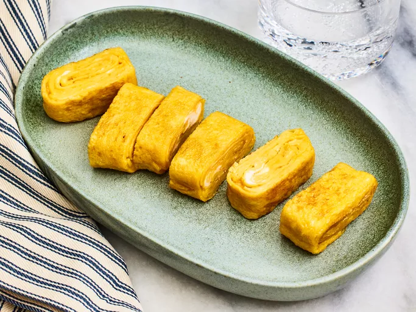

Japanese Tamago Egg

Description
Tamago (a.k.a. tamagoyaki) is a Japanese omelet. It is made by rolling together thin layers of fried eggs, then slicing the log into rectangles. Since the egg is mixed with dashi, sugar, and mirin, the finished product has a complex and subtly sweet flavor. Tamago is traditionally served for breakfast or as a sushi ingredient (Yields 6 servings)
Ingredients
- 4 eggs
- 1 tablespoon white sugar
- 1 teaspoon mirin (Japanese sweet wine)
- 1/2 teaspoon soy sauce
- 1/2 teaspoon vegetable oil, or more as needed
Steps
- Gather all ingredients
- Beat eggs thoroughly in a bowl; whisk in dashi stock, sugar, mirin, and soy sauce until sugar has dissolved. Lightly grease a nonstick skillet and heat over medium heat.
- Pour a thin layer of egg mixture into the hot pan and swirl to coat the pan. Cook until egg layer is firm on the bottom but still slightly liquid on top, about 1 minute
- Then lift up one edge using a spatula and roll up the egg layer
- Push omelet roll to one side of the skillet. Oil the skillet again and pour in another thin layer of egg, lifting the first omelet roll up slightly to allow the egg to flow underneath
- Roll up the first omelet in the new layer of egg and push omelet to the edge of the skillet as before
- Repeat the process with the remain egg mixture, oiling the pan each time if needed
- Remove rolled omelet to a serving platter and cut into 6 equal pieces to serve
Recipe tips
It is best to use a tamago pan, a 5x7-inch square nonstick frying pan, but any small pan will work — you just won't have square ends on your finished omelet.
Mirin is a sweet rice wine, and dashi is a Japanese soup stock made from kelp or shiitake. These ingredients are now carried in most larger grocery stores or at Asian markets